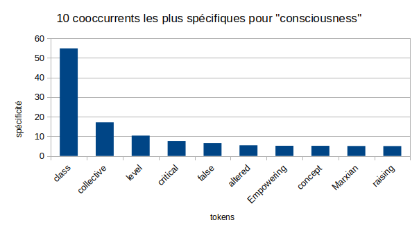
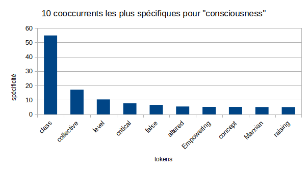

Analyse des Résultats
Pour ces analyses nous avons utilisé trois outils : la librairie python wordcloud, iTrameur, et le script python cooccurrents.py de PALS. Le nuage de mots créé par wordcloud permet de visualiser les mots les plus fréquents du corpus pour chaque mot cible. iTrameur permet de visualiser les mots co-occurrents à notre mot-cible les plus fréquents. Enfin, le script PALS cooccurrents.py permet de déterminer les co-occurrents les plus spécifiques à notre mot-cible (c'est-à-dire les co-occurrents qui n'apparaissent quasiment que dans le contexte du mot-cible).
Nuage de mots
Russe
Graphiques d'analyse
Russe
 

iTrameur: tableaux
Russe
iTrameur: réseaux
Russe
Conclusion
Russe
L'analyse lexicométrique des termes сознание et совесть révèle une distinction conceptuelle importante dans la langue russe, bien que ces deux mots se traduisent par "conscience" en français.
Сознание représente la conscience comme faculté cognitive. Son environnement lexical révèle une approche analytique et théorique de la conscience comme phénomène cognitif. Cette orientation se manifeste à travers plusieurs dimensions:
- la dimension structurelle se reflète dans l'usage fréquent de termes descriptifs comme "устроено" (structuré) et "формируется" (se forme): ces formes verbales suggèrent une conception de la conscience comme un système organisé et dynamique
- la dimension théorique transparaît dans l'association avec des termes du domaine académique/scientifique comme "психология" (psychologie) et "теория" (théorie). Les constructions linguistiques tendent à être explicatives, comme en témoigne la forte spécificité des termes "такое" (tel) et "что" (que)
- la présence significative de termes comme "человеческое" (humain) et "индивидуальное" (individuel) souligne, sous un angle philosophique, le caractère intrinsèque et le rôle fondamental de la conscience dans la condition humain.
Совесть, en revanche, incarne la conscience morale. L’analyse de son réseau de cooccurrences, qui l’ancre fermement le terme dans le domaine moral et émotionnel, révèle 2 aspects principaux:
- les dimensions éthique et spirituelle sont prédominante, comme l'attestent les associations avec les adjectifs "чистая" (pure) et "божий" (divin), et la présence significative dans le réseau lexical de termes comme "закон" (loi) et "грех" (péché)
- la composante émotionnelle est très marquée, notamment à travers des verbes comme "мучает" (tourmente) et "очищает" (purifie), qui confèrent une dimension active et affective à ce concept, et soulignent son rôle actif dans le jugement moral. La tension entre "личная" (personnelle) et "коллективная" (collective) illustre sa double fonction de guide individuel et de norme sociale.
Cette même tension entre l'individuel et le collectif se manifeste différemment de сознание : les cooccurrents "личная" (personnelle) et "коллективная" (collective) suggèrent une conscience morale qui opère à la fois comme guide personnel et comme norme sociale.
Cette analyse démontre comment la langue russe distingue clairement deux aspects de la conscience : d'une part, la faculté cognitive de pensée et de compréhension (сознание), et d'autre part, l'instance morale qui guide nos actions éthiques (совесть). Cette distinction se manifeste tant dans les associations lexicales que dans les constructions syntaxiques qui entourent ces 2 termes.